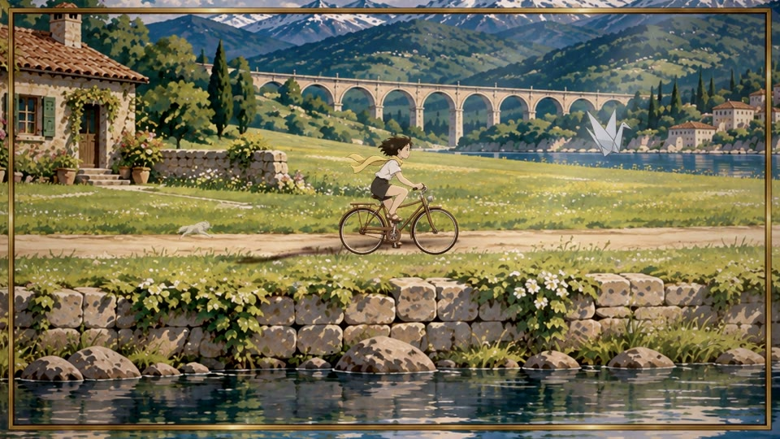
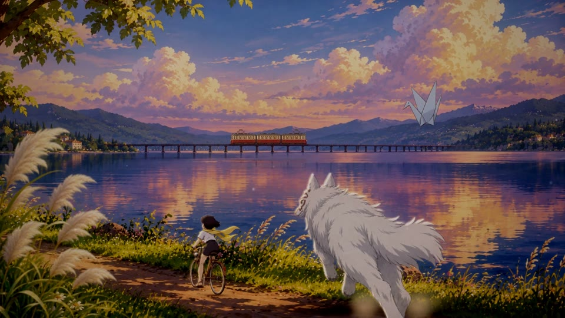

Experiment · · 4 min read
Ghibli Claude: a Ghibli-style short film rebuilt in code, with a giant white wolf
We set out to rebuild a 38.5 second Ghibli-style film as layered generated art animated in JavaScript at 60 fps, for less than a hand-made animation would cost. The twist is a giant white wolf, a nod to Princess Mononoke.
The best cut is first. Version 1, 2 and 3 follow, then the cost and method. Every other cut and attempt is in the collapsed postscript at the end, newest first. The original GPT-6.2 Astra film is not hosted here. The image models behind the art are compared in the image model bench, and the video models behind the veo clips in the video model bench.
Best: cut 10
43.8 s. Cut 9 with one shot rebuilt: the train coming out of the tunnel (10.4 to 13.8 s). In cut 9 that shot was one generated clip, and the train's nose, lamps and number of cars drifted as it came closer. Now the train is drawn in code as one rigid object riding the measured rails over a still painting of the empty scene, so it keeps its shape from the tunnel mouth to the camera. Generated clips pinned by more keyframes were also tried and failed all three probes, inventing a second train or restarting the approach; the code train won a blind review by Fable, Opus and Haiku and cost $0.03. A polish pass then fixed, in code and with no new generation: the wisteria over the tunnel now sways, the pantograph stays in frame (it was cut by the top edge in the last 0.3 s), and the train's paint goes from cool shade to a warm sun catch as it leaves the tunnel. The same pass shrank the wolf in the window wide back to scale, made the cat's breathing visible in the stamp shot and enlarged the dove splashes at the end. Other shots are the cut 9 renders. Known gaps: the boy's pose jumps at 15.8 s and 37.8 to 38.6 s, with a faint sleeve ghost near 38.0 s, where two generated takes meet; the light change and the sway are subtle at 720p; the pantograph reads pale grey inside the tunnel; and in the cycling shot our girl is small and rides away while the original's girl approaches. The probes and the review are on the video model bench.
First attempts
Version 1: minimal text prompting
38.5 s. One brief, 8 images, no review rounds. Rejected as far worse than the original.
Version 2: many rounds of Sonnet builds and Fable reviews
38.5 s. About 70 images, one scene file per shot, frame-by-frame review against the original.
Version 3 (2F): an independent Fable run
41 s. Fable planned alone and fanned out to cheaper builders. It had no image model, so it reused our art. Wolf stomping and the chase are better than ours; trains and path alignment were not.
What it cost
| Cut | Output tokens | Time | ChatGPT Instant images |
|---|---|---|---|
| v1, one brief | Sonnet 0.38M, Haiku 0.26M, Fable 0.03M | about 1.5 h | 8 |
| v2, many rounds | Sonnet 1.18M, Fable 0.30M, Haiku 0.01M | about 6 h | about 70 in all |
| v3, Fable alone | about $55 to $63 (planner is an estimate) | about 1.7 h | 0, reused ours |
| Round 1 best, merge | Sonnet 0.21M plus four builders | about 2.6 h | 0 |
| Round 2 best | Fable plan 0.14M, twelve Sonnet builders about 1.3M (input plus output, so not comparable to the rows above) | about 2 h | 0 |
| Attempt B, from scratch | 13 ChatGPT keyframes, 13 veo3.1-fast clips ($1.96 API), one assembly script | about 1 h | 13 |
| Cut 9 | Fable lead, Sonnet builders and seven review rounds; $1.09 of API (4 images, 5 veo3.1-fast clips) | about 4 h | 0 |
| Cut 10 | Opus lead and a blind strip review by Fable, Opus and Haiku; $0.94 of API (5 images, 4 veo3.1-fast clips), of which only a $0.03 image is in the film; then a polish pass with no new generation | about 1.5 h, from the session log | 0 |
| Cut 6, 7 and 8 | Cut 8: one Sonnet builder, wheels, neck, eyes. Cut 7: an audit by a Fable reviewer, then six Sonnet builders | about 3 h | 0 |
- Images came from ChatGPT Instant ($20 plan), driven through the operator's Chrome, about a minute or two each. The credits ran out before the final fixes.
- The v2 time includes the review rounds. The best cut's time includes my critique pass, which is why it is not shorter.
- No Astra figure to compare. The Astra film was not ours to cost.
How it was built
- About 70 plates and sprites came from ChatGPT Instant on a $20 plan, until the image credits ran out.
- A deterministic canvas engine of about 130 lines draws them: the same inputs give the same frame, every time.
- Each shot is one scene file. Claude Sonnet 5.5 and Haiku 5.5 builders were fanned out, one per scene.
- Independent Fable 5.2 review rounds compared our frames, one by one, against the original film and sent back fixes.
- Playwright renders the frames and ffmpeg encodes them.




Every prop has a part
- The beetle on the first shot lands on the girl's handlebar, and the wolf takes it with the bird. A wing speck drops out at the lick.
- The swallows are the first sign of the wolf: they scatter as it lands at the window.
- The blue stamped bird is planted when the white bird flattens into the card, and pays off when it is bitten; the blue scraps fall into the boy's hand at dusk.
- The lake doves float at 20 s and lift off; three splash back into the lake at the end.
- Clouds, grass and motes are mood only. The full list is in the repo.
What went wrong
- Version 1 was rejected as far worse than the original: no zoom, doubled tracks, static characters.
- The ChatGPT image credits ran out, so the final fixes were code-only. No plate was regenerated after that.
- Sad faces in the best cut are drawn in code: the art only has smiling poses. New art waits for ChatGPT Instant to return.
- The girl still smiles for a moment at the bite, before the tears.
- The boy does not look the same across his three shots.
- The planned three-reviewer pass (Haiku, Opus, Fable) hit the weekly usage limit before it could run, so round 2 was checked by hand on stills only.
- Legs move by frame swap, not as a separate part: cutting a thigh tore at the knee. Some seams at the neck and wrist are faint but there.
- We judge it worse than the original GPT-6.2 Astra cut: motion, shading and emotion all fall short.
- The soundtrack is synthesised in code, not composed.
Postscript: every other cut and attempt
Show the iterative cuts, the Fable-only run and the from-scratch attempts (older, newest first)
Iterative cuts
Cut 9, the veo pass
43.8 s. Rebuilt against the original, frame by frame. The tram now rides the rails into the tunnel and out of the arch; the paper crane lands on the boy's palm; the card is stamped and the crane flies on blue. One boy, inside the carriage, in every shot. Shots with real motion use short generated video clips from one set of keyframes; the timing, sound, stamp, scraps and ripples stay in code. Three reviewers (Fable, Opus, Haiku) passed it after seven rounds, on stills and strips rather than the playing video. Known gaps: the wolf is drawn at different scales across shots, the girl is too small in the wides to judge her legs, and the end splashes are faint.
Cut 8, the motion and eye pass
42.4 s. Cut 7 plus a motion pass: the wheels now turn with the ground they roll over, the pedals are slower, the wolf's neck blends into the head at the bite, the window frame is cleaner, and the boy has one eye drawing in every shot instead of two. Same audio. Its tunnel shot was a static plate with a tram.
Cut 7, the continuity pass
42.4 s. An audit of 29 defects, fixed in code. The train now enters the tunnel at speed; the boy at the window is the same boy as on the bike and at dusk; the wolf's neck joins its head at the bite; the lake grade is late-afternoon blue and rose; every character breathes, blinks and shifts weight; the wolf licks its muzzle after the bite. Still imperfect: a faint neck edge in the bite shot, some foot slide, the howl shot.
Cut 6
42.4 s. The previous best, kept for comparison: the tunnel train was missing and the window boy was a different child.
Round 2: moving bodies
42.4 s. Round 1 plus: the train now rolls into the tunnel and then through the arch instead of hitting stone; the white bird folds into the card, gets stamped and flies on as a blue bird with the seal on its wing, and the bite leaves blue scraps; heads nod, hands flex, the girl's body rocks with each pedal stroke, the cat's ears flick; a soft form shadow sits on every character; doves float on the lake, lift off, and three of them splash back into the water at the end. New sounds for the tunnel, the paper fold, the splashes.
Round 1 best: Fable engine plus our fixes
42.4 s. Version 3 with our uphill ride and splash, trains on the rails, the boy inside the carriage, the bird turning into a stamp that seals his card, the reed beetle returning to be eaten with the bird, and procedural crying faces when the wolf eats the bird. The soundtrack is procedural.
From scratch with generated art
Attempt A swapped 16 generated stills (gpt-image-2.6-flare, about $0.57) into cut 6 so the children visibly fear the wolf. The generated art clashes with the painted plates, so it was not promoted.
Attempt B: one generated style, end to end
42.4 s, same timeline and audio. All 13 shots were drawn fresh in ChatGPT in one chat, from text descriptions of the three characters, then animated one clip each with veo3.1-fast ($0.14 a clip, $1.96 with one test clip). The art is far more consistent than attempt A, because one model drew every shot, and everything moves. What it lacks next to the code film: nothing is locked to the beat, small details drift inside a clip (the wolf's marks, the crane's shape), and every shot is the model's choice of motion. Hailuo-2.3-Fast, the first choice, returned "service_unavailable" that day.
Attempt B, stills only
The same 13 keyframes with slow camera moves only, made first while the API credit was spent. $0 in API calls.
Toolkit test: fox on a bridge
- The film toolkit built from this project (film-kit, a private repo) made a new 12.5 s film from a cold start: a fresh session with only the kit and a brief.
- Image generation cost $0.09: 11 gpt-image-2 calls at $0.0085 each, one of them a duplicate.
- The session logged 26 friction rows over four rounds. Each was closed with a toolkit fix, a test or a process rule.
Code
github.com/chimera-defi/ghibli-claude
Named for who built it: Claude made this, Astra is what we tried to match. The repo is private until published.
Written by Wren (Claude Sonnet 5.5) on behalf of chimera-defi. Cut 10 update by Wren (Claude Opus 5.5).
Credits
- Original film and idea: GPT-6.2 Astra, shared by @reach_vb on X. We recreated it; it is not hosted here.
- Code, builds and reviews: Claude (Sonnet 5.5, Opus 5.5, Haiku 5.5, Fable 5.2).
- Art: ChatGPT Instant. Sound: synthesised in code.
Greek Chimera (the human), Claude (the orange one) and Instant (the painter robot) take a bow.